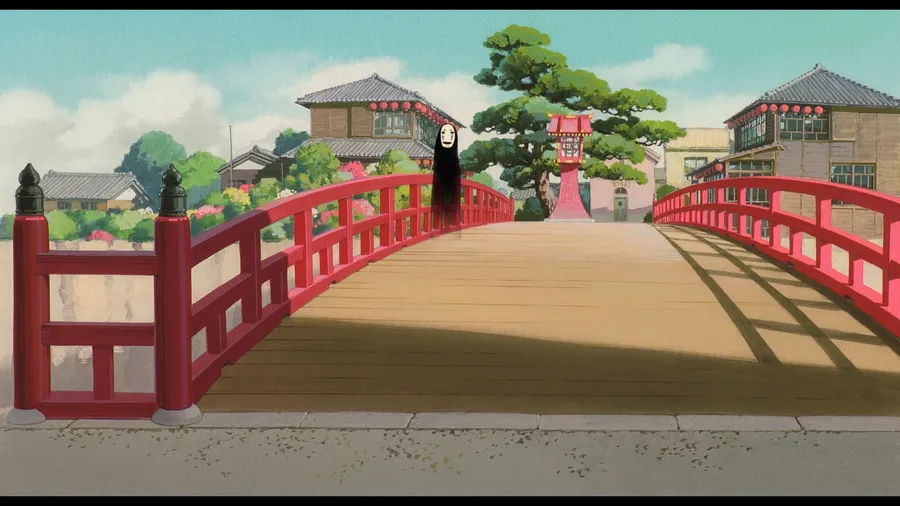
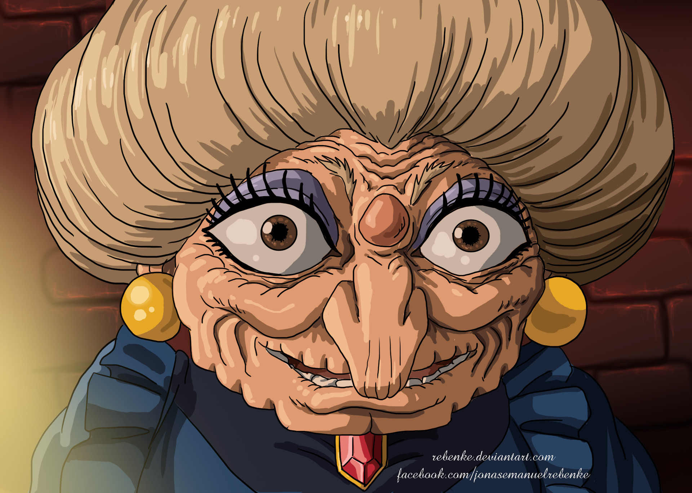

La estrella de la película demuestra la resiliencia de una joven. Debe salvar a sus padres debido a su imprudencia y atraviesa múltiples adversidades.
ComentarEl primer aliado de Chihiro, Haku, intenta salvarla rápidamente de quedar atrapada y volverse invisible al encontrarse con el humano. A lo largo de su aventura con Chihiro.
ComentarEste personaje protector se aseguró de ayudar a Chihiro, aunque al principio lo hizo a regañadientes. Es su bondadosa personalidad la que la protege del maligno Espíritu del Río.
Comentar
Este trabajador de calderas con aspecto de araña se niega inicialmente a ayudar a Chihiro, pero tras ver su tenacidad, rápidamente se convierte en un aliado de la joven protagonista.
ComentarComo antagonista de la película, es comprensible que sea una de las menos queridas. Su trato con Chihiro, Haku y muchos otros simplemente te hace desearle un final prematuro.
Comentar
Este espíritu gruñón y semitransparente causó estragos tras ser contaminado por espíritus codiciosos, creyendo, sin saberlo, que con este comportamiento se ganaría la compañía y amistad de Chihiro.
ComentarConsiderando cómo nos presentan a la gemela de Yubaba, es comprensible sospechar de su personaje. Fue bastante cruel al encontrar su Sello Dorado y amenazar a Chihiro. Sin embargo, todo cambia cuando vemos su misericordia y bondad.
Comentar
Boh es un personaje que cambia mucho a lo largo de El viaje de Chihiro , tanto metafórica como literalmente. Al principio, parece un niño egoísta que grita o lastima fácilmente a otros para conseguir lo que quiere (un clásico).
ComentarChichiyaku, al igual que muchos de los espíritus de la casa de baños, al principio trata a Chihiro con bastante dureza debido a su condición humana, pero tras ser salvado por la joven y ayudar al Espíritu del Río.
Comentar
Este pequeño espíritu rana codicioso es solo la primera señal para la joven Chihiro, ya que esta snitch verde delata que hay un humano entre los espíritus. Hay algo de satisfacción al ver que Sin-Cara se lo traga entero
ComentarSon los responsables de que nuestra protagonista acabe en este mundo mágico ya que, durante el trayecto a su nueva casa, deciden detener el coche y adentrarse en él a través de un misterioso túnel.
ComentarSon unos pequeños seres mágicos que ayudan a Kamaji en su labor en la sala de calderas. También son conocidos por el nombre de Makkuro kurosuke.
Comentar| Número | Protagonista y personajes principales | Rol del personaje | Descripción |
|---|---|---|---|
| 1 | Chihiro | Protagónico | Niña de 10 años de edad. Su juventud es un elemento clave en su desarrollo como personaje a lo largo de la historia. |
| 2 | Haku | Secundario | El dragón que se convierte en el mejor amigo de Chihiro y es un Dios del río. |
| 3 | Yubaba | Secundario | La malvada dueña de las casas termales y antagonista principal de la historia. |
| 4 | Kaonashi (Sin Cara) | Secundario | También conocido como sin cara. Es un espíritu misterioso que inicialmente aparece como una criatura sin rostro y sin voz. |
| 5 | Zeniba | Secundario | La hermana gemela de Yubaba, que es más bondadosa y humilde que su hermana. |